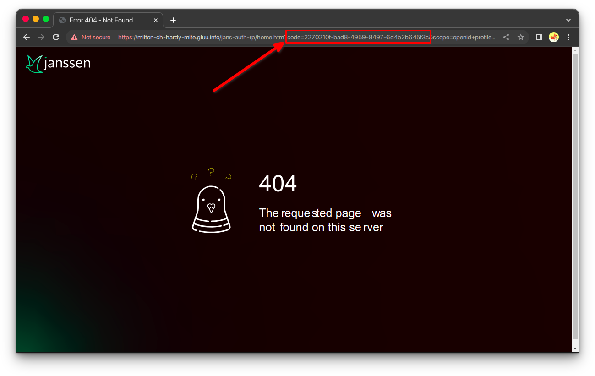

mTLS (Mutual Transport Layer Security)#
What Is mTLS?#
mTLS is a process that establishes an encrypted TLS connection in which both parties use X.509 digital certificates to authenticate each other. mTLS can help mitigate the risk of moving services to the cloud and can help prevent malicious third parties from imitating genuine apps.
Where Is mTLS Useful?#
Mutual client certificate authentication can be used any time the server needs to ensure the authenticity and validity of either a specific user or a specific device. For example, a client certificate can be issued to a company-owned laptop to identify and authorize it on a corporate network. Alternatively, a client certificate could be issued to an employee and stored on a smart card, which then allows the employee to gain access to applications or restricted areas of a building.
In practice, mTLS can identify and authorize the following:
- Devices onto a corporate network.
- Users into applications.
- Content delivery network (CDNs) or cloud security services to back-end web servers.
- Business-to-business (B2B) data exchanges that use APIs.
- Internet of Things (IoT) sensors, such as remote traffic cameras.
- Microservice architectures in which each microservice must ensure that each component it communicates with is valid and not tampered with.

mTLS in Jans Auth#
Jans Auth supports mTLS, and to configure it we must take these considerations into account:
- During DCR client registration, the
token_endpoint_auth_methodfield can receive 2 new values:tls_client_auth: indicates that client authentication to the authorization server will occur with mutual TLS utilizing the PKI method of associating a certificate to a client.self_signed_tls_client_auth: Indicates that client authentication to the authorization server will occur using mutual TLS with the client utilizing a self-signed certificate.
- There is new client property
tls_client_auth_subject_dnused to compare Subject DN of the certificate with configured value of client entry when authentication method is set totls_client_auth(saved in tls_client_auth_subject_dn or oxAttributes on persistence layer). - If MTLS Authentication is used then
access_tokenautomatically saves certificateS256hash of certificates which can be validated by RP. Ifaccess_tokenis JWT thenx5t#S256claim is added to payload of the token. Otherwise, token can be introspected.
{
"active": true,
"iss": "https://server.example.com",
"sub": "ty.webb@example.com",
"exp": 1493726400,
"nbf": 1493722800,
"cnf": {
"x5t#S256": "bwcK0esc3ACC3DB2Y5_lESsXE8o9ltc05O89jdN-dg2"
},
...,
...
}
Configuring Apache for mTLS#
The information below belongs to apache and web client (usually web browser) mutual authentication setup method. This
also includes basic checks to be performed for the setup.
Is mod_ssl installed: Run below command to confirm if the ssl module is installed.
apachectl -M | grep ssl
If we get ssl_module related output, then we're good to proceed. The output could look like:
root@jans:~# apachectl -M | grep ssl
ssl_module (shared)
Usually third party or Certbot SSL certs are used for web server ssl connections. In that case no extra configuration is necessary. But if we want to use self-signed certs, then follow on.
Self-Signed SSL Certs#
Server-Side mTLS setup#
Now, we're covering the case if you want to deploy your own CA Cert.
1. Open Terminal.#
2. Create a new directory to generate certificates.#
mkdir /etc/certs/mtlscert
Change to the directory created.
cd /etc/certs/mtlscert
3. Generate Self-Signed CA Cert.#
Run below command:
openssl req -newkey rsa:2048 -nodes -keyform PEM -keyout example-ca.key -x509 -days 3650 -outform PEM -out example-ca.crt
Below is a sample run of the command.
root@jans:/etc/certs/mtlscert# openssl req -newkey rsa:2048 -nodes -keyform PEM -keyout example-ca.key -x509 -days 3650 -outform PEM -out example-ca.crt
Generating a RSA private key
.........................................+++++
.........................................+++++
writing new private key to 'example-ca.key'
-----
You are about to be asked to enter information that will be incorporated
into your certificate request.
What you are about to enter is what is called a Distinguished Name or a DN.
There are quite a few fields but you can leave some blank
For some fields there will be a default value,
If you enter '.', the field will be left blank.
-----
Country Name (2 letter code) [AU]:US
State or Province Name (full name) [Some-State]:Austin
Locality Name (eg, city) []:TX
Organization Name (eg, company) [Internet Widgits Pty Ltd]:Janssen Org.
Organizational Unit Name (eg, section) []:IT
Common Name (e.g. server FQDN or YOUR name) []:yourdomain.com
Email Address []:youremail@yourdomain.com
Above command will create two files: example-ca.key and example-ca.crt.
root@jans:/etc/certs/mtlscert# ls
example-ca.crt example-ca.key
4. Generate private key.#
Run below command:
openssl genrsa -out example.key 2048
Below is a sample run of the command.
root@jans:/etc/certs/mtlscert# openssl genrsa -out example.key 2048
Generating RSA private key, 2048 bit long modulus (2 primes)
......................................+++++
..........................................................................................................+++++
e is 65537 (0x010001)
Above command creates: example.key.
root@jans:/etc/certs/mtlscert# ls
example-ca.crt example-ca.key example.key
5. Generate a server CSR (Certificate Signing Request):#
Run below command:
openssl req -new -key example.key -out example.csr
Below is a sample run of the command.
root@jans:/etc/certs/mtlscert# openssl req -new -key example.key -out example.csr
You are about to be asked to enter information that will be incorporated
into your certificate request.
What you are about to enter is what is called a Distinguished Name or a DN.
There are quite a few fields but you can leave some blank
For some fields there will be a default value,
If you enter '.', the field will be left blank.
-----
Country Name (2 letter code) [AU]:US
State or Province Name (full name) [Some-State]:Austin
Locality Name (eg, city) []:TX
Organization Name (eg, company) [Internet Widgits Pty Ltd]:Janssen Org.
Organizational Unit Name (eg, section) []:IT
Common Name (e.g. server FQDN or YOUR name) []:yourdomain.com
Email Address []:youremail@yourdomain.com
Please enter the following 'extra' attributes
to be sent with your certificate request
A challenge password []:
An optional company name []:
Above command will create the file: example.csr.
root@jans:/etc/certs/mtlscert# ls
example-ca.crt example-ca.key example.csr example.key
6. Sign the CSR example.csr we just generated.#
Run below command:
openssl x509 -req -in example.csr -CA example-ca.crt -CAkey example-ca.key -set_serial 100 -days 365 -outform PEM -out example.crt
Below is a sample run of the command.
root@jans:/etc/certs/mtlscert# openssl x509 -req -in example.csr -CA example-ca.crt -CAkey example-ca.key -set_serial 100 -days 365 -outform PEM -out example.crt
Signature ok
subject=C = US, ST = Austin, L = TX, O = Janssen Org., OU = IT, CN = yourdomain.com, emailAddress = youremail@yourdomain.com
Getting CA Private Key
Above command will create the file: example.crt for 365 days.
root@jans:/etc/certs/mtlscert# ls
example-ca.crt example-ca.key example.crt example.csr example.key
7. Configure Apache2.#
Add the following lines in the /etc/apache2/sites-available/https_jans.conf file.
SSLEngine On
SSLCertificateFile /etc/certs/mtlscert/example.crt
SSLCertificateKeyFile /etc/certs/mtlscert/example.key
SSLCACertificateFile /etc/certs/mtlscert/example-ca.crt
It is critical to configure certificates validation on Apache 2 correctly, since actual validation of the certificates
is performed by Apache 2. After Apache certificate validation is configured correctly, make sure there is client
certificate forward to jans-auth application. jans-auth (AS) expects certificate in X-ClientCert header.
<LocationMatch /jans-auth>
SSLVerifyClient require
SSLVerifyDepth 10
SSLOptions -StdEnvVars +ExportCertData
# Forward certificate to destination server (oxauth)
RequestHeader set X-ClientCert %{SSL_CLIENT_CERT}s
</LocationMatch>
Now we must restart the Apache2 server.
service apache2 restart
To check if SSL cert on apache works:
openssl s_client -connect yourdomain.com:443
Client-Side mTLS setup#
1. Generate private key.#
Run below command:
openssl genrsa -out example-cli.key 2048
Below is a sample run of the command.
root@jans:/etc/certs/mtlscert# openssl genrsa -out example-cli.key 2048
Generating RSA private key, 2048 bit long modulus (2 primes)
...........................................+++++
.............................................+++++
e is 65537 (0x010001)
Above command will create the file: example-cli.key.
root@jans:/etc/certs/mtlscert# ls
example-ca.crt example-ca.key example-cli.key example.crt example.csr example.key
2. Generate a client CSR (Certificate Signing Request).#
Run below command:
openssl req -new -key example-cli.key -out example-cli.csr
Below is a sample run of the command.
root@jans:/etc/certs/mtlscert# openssl req -new -key example-cli.key -out example-cli.csr
You are about to be asked to enter information that will be incorporated
into your certificate request.
What you are about to enter is what is called a Distinguished Name or a DN.
There are quite a few fields but you can leave some blank
For some fields there will be a default value,
If you enter '.', the field will be left blank.
-----
Country Name (2 letter code) [AU]:US
State or Province Name (full name) [Some-State]:Austin
Locality Name (eg, city) []:TX
Organization Name (eg, company) [Internet Widgits Pty Ltd]:Janssen Client Org.
Organizational Unit Name (eg, section) []:IT
Common Name (e.g. server FQDN or YOUR name) []:yourdomain.com
Email Address []:youremail@yourdomain.com
Please enter the following 'extra' attributes
to be sent with your certificate request
A challenge password []:
An optional company name []:
Above command will create the file: example-cli.csr.
root@jans:/etc/certs/mtlscert# ls
example-ca.crt example-ca.key example-cli.csr example-cli.key example.crt example.csr example.key
3. Sign the CSR example-cli.csr we just generated.#
Run below command:
openssl x509 -req -in example-cli.csr -CA example-ca.crt -CAkey example-ca.key -set_serial 101 -days 365 -outform PEM -out example-cli.crt
Below is a sample run of the command.
root@jans:/etc/certs/mtlscert# openssl x509 -req -in example-cli.csr -CA example-ca.crt -CAkey example-ca.key -set_serial 101 -days 365 -outform PEM -out example-cli.crt
Signature ok
subject=C = US, ST = Austin, L = TX, O = Janssen Client Org., OU = IT, CN = yourdomain.com, emailAddress = youremail@yourdomain.com
Getting CA Private Key
Above command will create the file: example-cli.crt for 365 days.
root@jans:/etc/certs/mtlscert# ls
example-ca.crt example-ca.key example-cli.crt example-cli.csr example-cli.key example.crt example.csr example.key
4. Generate PKCS12 cert#
Some browsers need client certs to be in the format pkcs12.
Run below command:
openssl pkcs12 -export -inkey example-cli.key -in example-cli.crt -out example-cli.p12
Below is a sample run of the command.
root@jans:/etc/certs/mtlscert# openssl pkcs12 -export -inkey example-cli.key -in example-cli.crt -out example-cli.p12
Enter Export Password:
Verifying - Enter Export Password:
Above command will create the file: example-cli.p12.
root@jans:/etc/certs/mtlscert# ls
example-ca.crt example-ca.key example-cli.crt example-cli.csr example-cli.key example-cli.p12 example.crt example.csr example.key
mTLS testing#
We are going to run an mTLS example where we will perform the following flow:
- Register new client.
- Call
authorizeendpoint. - Call
tokenendpoint. - Call
introspectionendpoint.
Previously we need to configure the client's certificate in the browser of your choice.
Google Chrome Settings#
- In the search bar go to
chrome://settings/certificates. - In the
Your Certificatessection, click onImportbutton. - Select the certificate
example-cli.p12and enter the password you set when generating it.
Firefox Settings#
- In the search bar go to
about:preferences#privacy. - Click on
View Certificates. - In the
Your Certificatessection, click onImportbutton. - Select the certificate
example-cli.p12and enter the password you set when generating it.


Solving the curl problem#
If you have openssl version 3.x.x, most likely when you are trying to consume
the /.well-known/openid-configuration endpoint.
curl --insecure --cert-type P12 --cert example-cli.p12:<YOUR_PASSWORD> --location 'https://<YOUR_DOMAIN>/.well-known/openid-configuration'
You will get the following error:
root@jans~# curl --insecure --cert-type P12 --cert example-cli.p12:<YOUR_PASSWORD> --location 'https://<YOUR_DOMAIN>/.well-known/openid-configuration'
curl: (58) could not parse PKCS12 file, check password, OpenSSL error error:0308010C:digital envelope routines::unsupported
To fix this error, edit the file /etc/ssl/openssl.cnf and make sure that these lines are uncommented and if they are
not, add them:
openssl_conf = openssl_init
[openssl_init]
providers = provider_sect
[provider_sect]
default = default_sect
legacy = legacy_sect
[default_sect]
activate = 1
[legacy_sect]
activate = 1
Once this change is done, you should be able to consume the /.well-known/openid-configuration endpoint without any
problems
root@jans~# curl --insecure --cert-type P12 --cert example-cli.p12:<YOUR_PASSWORD> --location 'https://<YOUR_DOMAIN>/.well-known/openid-configuration'
{
"request_parameter_supported" : true,
"pushed_authorization_request_endpoint" : "https://<YOUR_DOMAIN>/jans-auth/restv1/par",
"introspection_endpoint" : "https://<YOUR_DOMAIN>/jans-auth/restv1/introspection",
"claims_parameter_supported" : true,
"issuer" : "https://<YOUR_DOMAIN>",
"userinfo_encryption_enc_values_supported" : [ "A128CBC+HS256", "A256CBC+HS512", "A128GCM", "A256GCM" ],
"id_token_encryption_enc_values_supported" : [ "A128CBC+HS256", "A256CBC+HS512", "A128GCM", "A256GCM" ],
"access_token_signing_alg_values_supported" : [ "none", "HS256", "HS384", "HS512", "RS256", "RS384", "RS512", "ES256", "ES384", "ES512", "PS256", "PS384", "PS512" ],
"authorization_endpoint" : "https://<YOUR_DOMAIN>/jans-auth/restv1/authorize",
...,
...,
...
}
1. Register new client#
Run below command:
curl --insecure --cert-type P12 --cert example-cli.p12:<YOUR_PASSWORD> --location 'https://<YOUR_DOMAIN>/jans-auth/restv1/register' \
--header 'Content-Type: application/json' \
--data '{
"client_name": "Test Client mTLS",
"application_type": "web",
"access_token_as_jwt": true,
"token_endpoint_auth_method": "self_signed_tls_client_auth",
"jwks": {
"keys": [
{
"kid": "YOUR_KID",
"kty": "RSA",
"alg": "RS256",
"use": "sig",
"e": "AQAB",
"n": "5elNNA2wYlUpEK2JxOqIgFe3JmHBs63M7wvKM_cbzXjMpLXn7UqAbIN7drDgLIvsIwSo9DAuWvFV3mLqApFYlL1qQCEveULbh6LorqPUzl2UjHwDDFlM1Hj6JpJ_GbacX5-YnRgXC7k_p4ZIf0GOkQxIo0WVNhulku3z84Ko8Efk5BeV7ImFyXWLoO-ru8h3Yvq2h1LRVYX02LZlG6Mv8dqCJsWHIbnmaB16TSe_HCA3qEA4k9La2fl4R7fPlq1u89LN3kz2M0cm1M8aTTquLHP0tv5EpeqX1pG4VjwurssevguRM9QqrGkPktAw_uzIKfO7s5_j3AD3teYdVQFryQ"
}
]
},
"scope": [
"openid",
"profile",
"email"
],
"grant_types": [
"authorization_code"
],
"response_types": [
"code",
"token",
"id_token"
],
"redirect_uris": [
https://<YOUR_DOMAIN>/jans-auth-rp/home.htm
]
}'
Response:
{
"allow_spontaneous_scopes": false,
"jwks": {
"keys": [
{
"kty": "RSA",
"e": "AQAB",
"use": "sig",
"kid": "your-kid",
"alg": "RS256",
"n": "5elNNA2wYlUpEK2JxOqIgFe3JmHBs63M7wvKM_cbzXjMpLXn7UqAbIN7drDgLIvsIwSo9DAuWvFV3mLqApFYlL1qQCEveULbh6LorqPUzl2UjHwDDFlM1Hj6JpJ_GbacX5-YnRgXC7k_p4ZIf0GOkQxIo0WVNhulku3z84Ko8Efk5BeV7ImFyXWLoO-ru8h3Yvq2h1LRVYX02LZlG6Mv8dqCJsWHIbnmaB16TSe_HCA3qEA4k9La2fl4R7fPlq1u89LN3kz2M0cm1M8aTTquLHP0tv5EpeqX1pG4VjwurssevguRM9QqrGkPktAw_uzIKfO7s5_j3AD3teYdVQFryQ"
}
]
},
"application_type": "web",
"rpt_as_jwt": false,
"registration_client_uri": "https://<YOUR_DOMAIN>/jans-auth/restv1/register?client_id=d16994c2-313c-4440-9713-25290fbb89a9",
"tls_client_auth_subject_dn": "",
"run_introspection_script_before_jwt_creation": false,
"registration_access_token": "93a52334-bf79-4414-bc9a-983b6921597c",
"client_id": "d16994c2-313c-4440-9713-25290fbb89a9",
"token_endpoint_auth_method": "self_signed_tls_client_auth",
"scope": "email openid profile",
"client_secret": "e1c9e9df-e542-4225-adb4-d0590f85d97d",
"client_id_issued_at": 1698114939,
"backchannel_logout_uri": "",
"backchannel_logout_session_required": false,
"client_name": "Test Client mTLS",
"par_lifetime": 600,
"spontaneous_scopes": [],
"id_token_signed_response_alg": "RS256",
"access_token_as_jwt": true,
"grant_types": [
"implicit",
"refresh_token",
"authorization_code"
],
"subject_type": "pairwise",
"additional_token_endpoint_auth_methods": [],
"keep_client_authorization_after_expiration": false,
"require_par": false,
"redirect_uris": [
"https://<YOUR_DOMAIN>/jans-auth-rp/home.htm"
],
"redirect_uris_regex": "",
"additional_audience": [],
"frontchannel_logout_session_required": false,
"client_secret_expires_at": 1698201339,
"access_token_signing_alg": "RS256",
"response_types": [
"code",
"id_token",
"token"
]
}
NOTE: To obtain the
jwksfield data, follow the next step.
P12 to JWKS#
To get the fields from jwks you can use the following command:
openssl x509 -in example-cli.p12 -pubkey -noout | pem-jwk | jq '{kid: "your-kid", kty: .kty , alg: "RS256" , use: "sig", e: .e, n: .n }'
Make sure you have pem-jwk installed, use the command: npm install -g pem-jwk or yarn global add pem-jwk.
Below is a sample run of the command.
root@jans:~# openssl x509 -in example-cli.p12 -pubkey -noout | pem-jwk | jq '{kid: "your-kid", kty: .kty , alg: "RS256" , use: "sig", e: .e, n: .n }'
Enter pass phrase for PKCS12 import pass phrase:
{
"kid": "your-kid",
"kty": "RSA",
"alg": "RS256",
"use": "sig",
"e": "AQAB",
"n": "5elNNA2wYlUpEK2JxOqIgFe3JmHBs63M7wvKM_cbzXjMpLXn7UqAbIN7drDgLIvsIwSo9DAuWvFV3mLqApFYlL1qQCEveULbh6LorqPUzl2UjHwDDFlM1Hj6JpJ_GbacX5-YnRgXC7k_p4ZIf0GOkQxIo0WVNhulku3z84Ko8Efk5BeV7ImFyXWLoO-ru8h3Yvq2h1LRVYX02LZlG6Mv8dqCJsWHIbnmaB16TSe_HCA3qEA4k9La2fl4R7fPlq1u89LN3kz2M0cm1M8aTTquLHP0tv5EpeqX1pG4VjwurssevguRM9QqrGkPktAw_uzIKfO7s5_j3AD3teYdVQFryQ"
}
2. Call authorize endpoint#
From your browser of choice call the following url:
https://<YOUR_DOMAIN>/jans-auth/restv1/authorize?response_type=code&client_id=d16994c2-313c-4440-9713-25290fbb89a9&scope=openid+profil+email&redirect_uri=https://<YOUR_DOMAIN>/jans-auth-rp/home.htm&state=f9bb35cb-3485-4ae4-aa8e-63e9a97b6e5d&nonce=4a2f07cb-521b-465c-8b06-0c17711a96a7
URL parameters:
response_type=codeclient_id=d16994c2-313c-4440-9713-25290fbb89a9scope=openid+profil+emailredirect_uri=https://<YOUR_DOMAIN>/jans-auth-rp/home.htmstate=f9bb35cb-3485-4ae4-aa8e-63e9a97b6e5dnonce=4a2f07cb-521b-465c-8b06-0c17711a96a7
The field we need to obtain is the code.

3. Call token endpoint#
Previously we have obtained the code field, we will use this value to call the endpoint token.
curl --insecure --cert-type P12 --cert example-cli.p12:<YOUR_PASSWORD> --location 'https://<YOUR_DOMAIN>/jans-auth/restv1/token' \
--header 'Content-Type: application/x-www-form-urlencoded' \
--data-urlencode 'grant_type=authorization_code' \
--data-urlencode 'redirect_uri=https://<YOUR_DOMAIN>/jans-auth-rp/home.htm' \
--data-urlencode 'client_id=d16994c2-313c-4440-9713-25290fbb89a9' \
--data-urlencode 'client_secret=<YOUR_CLIENT_SECRET>' \
--data-urlencode 'code=<YOUR_CODE>'
Response:
{
"access_token": "eyJraWQiOiJjb25uZWN0X2NmNjBiZWZmLTU1MzUtNDllNS04MWQ5LTM5ZDM4ZmNlMWNhMF9zaWdfcnMyNTYiLCJ0eXAiOiJqd3QiLCJhbGciOiJSUzI1NiJ9.eyJzdWIiOiJNSGdqa2hnTktmZWF4ZUVEY0wycEt5c1EwVUQ4RDk1QUd5NFBGXzI2cmlnIiwiY29kZSI6ImE0NWE5ODI5LTFkMDQtNGQxNS05NjllLWRiMjk3Mzk4ZTdjMyIsImlzcyI6Imh0dHBzOi8vbWlsdG9uLWNoLWhhcmR5LW1pdGUuZ2x1dS5pbmZvIiwidG9rZW5fdHlwZSI6IkJlYXJlciIsImNsaWVudF9pZCI6IjVkODM1NDA3LTFlZjMtNDQxZC04YWU2LTZiYmRkNTcyNzZjYyIsImF1ZCI6IjVkODM1NDA3LTFlZjMtNDQxZC04YWU2LTZiYmRkNTcyNzZjYyIsImFjciI6ImJhc2ljIiwieDV0I1MyNTYiOiJPeHRJQXRBMEMwTkwteTR2UmZLeDd6TExFZXhfWG1DelduUWJ4ejZUem5ZIiwic2NvcGUiOlsib3BlbmlkIiwicHJvZmlsZSIsImVtYWlsIl0sImF1dGhfdGltZSI6MTY5ODE5NDczNiwiZXhwIjoxNjk4Mjc4MDQzLCJpYXQiOjE2OTgxOTY4MzIsInVzZXJuYW1lIjoiRGVmYXVsdCBBZG1pbiBVc2VyIn0.JpK7JYy6Avui3LNbxTKBYJW9fqjEIqijCXPw9fvqEO1kqO7AUozOEof00hPKzJo1Dh7VgGpY89MiAduDUoU3QCemtFsNSd1DCyExl2s3w5OF2mUm6nMzjaS377ZQQ39DAq91OGFFq_ISt4JIhWRf7_xUEvlLRAttTqxE5qp1ZYvgAYu07jbVJX8WqJvxYz3rZ3J-4kq2FLREunRf5KxYaHO-oKzrmhRVPTc_cj1vqwSfu8vRjLmx4P-eN7SgVNa0XmZ8WClLnmchucGBH6rYq3bXZWsOKixwLhno_2vPe1MmbK3XnNNBu_fm_bL2N5kgAwr9b-upoBJc08IyCje1vA",
"refresh_token": "1e58e2c9-4175-4b3f-8170-65544b1a7c48",
"id_token": "eyJraWQiOiJjb25uZWN0X2NmNjBiZWZmLTU1MzUtNDllNS04MWQ5LTM5ZDM4ZmNlMWNhMF9zaWdfcnMyNTYiLCJ0eXAiOiJqd3QiLCJhbGciOiJSUzI1NiJ9.eyJhdF9oYXNoIjoib1NoVDE4YUdRVHdtNXBjT255dkNMUSIsInN1YiI6Ik1IZ2praGdOS2ZlYXhlRURjTDJwS3lzUTBVRDhEOTVBR3k0UEZfMjZyaWciLCJhbXIiOlsiMTAiXSwiaXNzIjoiaHR0cHM6Ly9taWx0b24tY2gtaGFyZHktbWl0ZS5nbHV1LmluZm8iLCJub25jZSI6ImMxNGQ2Y2RlLWQ5NTYtNDM4Zi04Mzk5LTQ3MzdkNWZlOTkyOSIsInNpZCI6IjI2ZTM4YTJmLTEzZTktNGY4Yi05MzdjLTQ3M2ViMjdlNzFkNiIsImphbnNPcGVuSURDb25uZWN0VmVyc2lvbiI6Im9wZW5pZGNvbm5lY3QtMS4wIiwiYXVkIjoiNWQ4MzU0MDctMWVmMy00NDFkLThhZTYtNmJiZGQ1NzI3NmNjIiwicmFuZG9tIjoiMjVhZDViMmUtMGNkMi00Mjg3LTg1M2ItZWY3NWRhZjMzNWMwIiwiYWNyIjoiYmFzaWMiLCJjX2hhc2giOiJwM2ZJVHlGT09fd0tRZW9QT1VkWWF3IiwiYXV0aF90aW1lIjoxNjk4MTk0NzM2LCJleHAiOjE2OTgyMDA0MzIsImdyYW50IjoiYXV0aG9yaXphdGlvbl9jb2RlIiwiaWF0IjoxNjk4MTk2ODMyfQ.GMXkiFGcCy6dXI8gPPuCLd977Gs_rkG1w3FrNx_HlSnmcDUSsEQHvPxpA99Y3L8Z82uLHYCbP5Vga6iCEOmBBHnu9jEsmYgp-TSrB31HV-5g7-o4ZWJG05SdL9KgSP3PyDXRqcE0VFxBJ-uJSyvI-htQ4GUXMIhqVhbJJynPNosXtZvvDVIw1NBThupmqx58cozf5tIdnwaeiuN_Ce2XQrjZBiachI6KWFa-Mstrsdw1E6Ny_4bP-1UmeNgScd6pmIUemGsfclxIAgO0lACqgbGh7wo0PljbhEkGU_i9kP--0KJHkBkUxflULW3aAqdYtG9hEr_JEIddHVxXbi1c_w",
"token_type": "Bearer",
"expires_in": 81210
}
Once we have obtained the access_token in jwt(json web token) format, we will do the last step.
4. Call introspection endpoint#
Run below command:
curl --insecure --cert-type P12 --cert example-cli.p12:<YOUR_PASSWORD> --location 'https://<YOUR_DOMAIN>/jans-auth/restv1/introspection' \
--header 'Content-Type: application/x-www-form-urlencoded' \
--header 'Authorization: Bearer <ACCESS_TOKEN>' \
--data-urlencode 'token=<ACCESS_TOKEN>' \
--data-urlencode 'response_as_jwt=false'
Response:
{
"sub": "MHgjkhgNKfeaxeEDcL2pKysQ0UD8D95AGy4PF_26rig",
"iss": "https://<YOUR_DOMAIN>",
"active": true,
"token_type": "Bearer",
"client_id": "d16994c2-313c-4440-9713-25290fbb89a9",
"aud": "5d835407-1ef3-441d-8ae6-6bbdd57276cc",
"acr": "basic",
"nbf": null,
"scope": "openid profile email",
"auth_time": 1698194736,
"cnf": {
"x5t#S256": "OxtIAtA0C0NL-y4vRfKx7zLLEex_XmCzWnQbxz6TznY"
},
"exp": 1698278043,
"iat": 1698201265,
"jti": null,
"username": "admin"
}
Specification document#
For more details of the specification, you can have a look at the following link OAuth 2.0 Mutual-TLS Client Authentication and Certificate-Bound Access Tokens